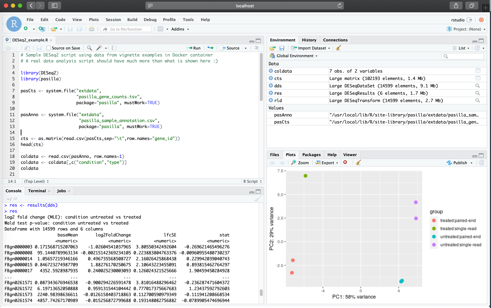

Review part 1 available in this website.
Recently, Bioconductor adopted a new container architecture which streamlines using Docker with Bioconductor packages.
Directly from Bioconductor’s documentation, which I highly recommend to read (http://bioconductor.org/help/docker/), the following should be noted:
Goals for new container architecture
A few of our key goals to migrate to a new set of Docker containers are, * to keep the image size being shipped by the Bioconductor team at a manageable size. * easy to extend, so developers can just use a single image to inherit and build their docker image. * easy to maintain, by streamlining the docker inheritance chain. * Adopt a “best practices” outline so that new community contributed docker images get reviewed and follow standards. * Adopt a deprecation policy and life cycle for images similar to Bioconductor packages. * Replicate the Linux build machines (malbec2) on the bioconductor/bioconductor_docker:devel image as closely as possible. While this is not fully possible just yet, this image can be used by maintainers who wish to reproduce errors seen on the Bioconductor Linux build machine and as a helpful debugging tool.
Further:
Current Containers
For each supported version of Bioconductor, we provide: * bioconductor/bioconductor_docker:RELEASE_X_Y * bioconductor/bioconductor_docker:devel
Thus, if you have package dependencies from Bioconductor, it’s highly recommended to use the Bioconductor container which are built using rocker rstudio containers (see the FROM directive in the Bioconductor Dockerfile). This streamlined resource saves effort for users from having to troubleshoot potential issues that might arise from using Bioconductor resources in Docker (e.g.: missing Bioconductor dependencies).
NOTE: As mentioned above, Biconductor containers are released based on Bioconducor releases (bioconductor/bioconductor_docker:RELEASE_X_Y), keeping in mind that each bioconductor release is linked to specific R versions. Thus, when choosing a container repository, use the following release history to track down R versions compatible with the Bioconductor releases: https://www.bioconductor.org/about/release-announcements/
The following defines the Dockerfile with Bioconductor release 3.10 (linked to R version 3.6), along with installations (with BiocManager::install) for Bioconductor packages DESeq2 and pasilla. I am also adding a few CRAN packages via the standard R install function install.packages to simply demonstrate that you can still install any non-bioconductor dependencies in the same form you would normally do without using the Bioconductor parent image.
FROM bioconductor/bioconductor_docker:RELEASE_3_10
# LABEL adds metadata to an image:
LABEL maintainer="Lara Ianov <lianov@uab.edu>"
LABEL description="An environment for running DESeq2 from Bioconductor 3.10"
# a location to mount ...(again optional to do this in the Dockerfile)
RUN mkdir /home/rstudio/DESeq2_analysis
# Install Bioconductor and other commonly used CRAN packages in DESeq2...
# NOTE that you can install CRAN packages with BiocManager::install, but below
# installing CRAN with install.packages as example
RUN R -e 'BiocManager::install(c("DESeq2", "pasilla"))'
RUN R -e 'install.packages(c("readr","ggrepel","pheatmap"))'Note I have added the LABEL directive. This adds metadata to the image which can be fetched with docker image inspect command. While not required, it can be helpful to add relevant information in this field.
Now build the image and run the container in the same form as shown in Part 1 (once again assuming you are in the directory which contains the Dockerfile shown in this part. You can find it at the ./src/intro_to_docker_part2 of the GitHub repository which contains this material):
docker build --rm --force-rm -t rstudio_deseq2:3.10 .docker run -d --rm -p 8787:8787 -e PASSWORD=NBI -v `pwd`/dir_for_mounting:/home/rstudio/DESeq2_analysis rstudio_deseq2:3.10(For this example I am adding the R analysis script to dir_for_mounting instead of copying it to the container with the COPY directive. Further as we are using the pasilla dataset, there is no external data here, but this directory could also be used to add your own datasets.)
The RStudio session is now available at localhost:8787

To easily share your images with others, use Docker Hub as the registry to distribute publish images. I recommend to read Docker Getting Started documentation on Sharing the application if you have not done so, but here, I briefly cover the steps to publish the Bioconductor image which was just created:
Create a repository in Docker Hub by navigating to “Repositories > Create”. Provide a name and click “Create”. Note that images must be namespaced correctly to be shared in Docker Hub following: <Your Docker ID>/<Repository Name>:<tag>
Tag and push the image:
docker tag rstudio_deseq2:3.10 <Your Docker ID>/rstudio_deseq2:3.10docker push <Your Docker ID>/rstudio_deseq2:3.10The same container we created in this session is available at: https://hub.docker.com/r/lianov/rstudio_deseq2
A very useful command to your own images and others publicly available is docker history (https://docs.docker.com/engine/reference/commandline/history/). It allows you to inspect the history of the image, including the specific commands called from the Dockerfile. docker history --no-trunc <image:tag> expands the outputs for further details.
Continue tutorial to part 3 from the drop down menu at the navigation bar of this website. This section will cover running RStudio containers in the UAB HPC with Singularity